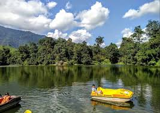

Major Cities and Towns
Itanagar
- Itanagar Fort: A historic fort built in the 14th century, offering insights into the region's rich history.
- Ganga Lake: A serene lake surrounded by lush greenery, perfect for picnics and leisurely walks.
- Jawaharlal Nehru State Museum: A museum showcasing the culture, traditions, and history of Arunachal Pradesh.
- Buddha Vihar: A beautiful Buddhist monastery that attracts visitors seeking peace and spirituality.
- Parshuram Kund: A sacred pilgrimage site known for its natural beauty and religious significance.
- Itanagar Wildlife Sanctuary: A sanctuary home to diverse flora and fauna, ideal for nature lovers and wildlife enthusiasts.
Tawang
- Tawang Monastery: The largest monastery in India, known for its stunning architecture and serene atmosphere.
- Sela Pass: A high-altitude mountain pass offering breathtaking views and a beautiful lake.
- Bumla Pass: An important border pass that provides stunning views and historical significance.
- Shonga-tser Lake: A beautiful glacial lake, perfect for picnics and nature walks.
- Nuranang Waterfall: A stunning waterfall known for its picturesque views and serene environment.
- Taktsang Gompa: A monastery perched on a cliff, offering panoramic views of the surrounding landscape.
Ziro
- Ziro Valley: A picturesque valley known for its lush green landscapes, rice fields, and scenic beauty.
- Talley Valley Wildlife Sanctuary: A protected area rich in biodiversity, home to various flora and fauna.
- Apatanis Tribal Village: A unique village showcasing the culture, traditions, and crafts of the Apatani tribe.
- Hapoli: The main town area of Ziro, known for its vibrant markets and local cuisine.
- Shivling: A natural rock formation resembling a Shivling, considered sacred by locals.
- Music Festival: Ziro is famous for its annual music festival, attracting artists and tourists from around the world.
Bomdila
- Bomdila Monastery: A prominent Buddhist monastery offering stunning views of the surrounding mountains.
- Dirang Valley: A picturesque valley known for its scenic beauty, hot springs, and cultural diversity.
- Bomdila View Point: A popular viewpoint providing breathtaking panoramic views of the Himalayan ranges.
- Rangengyung Monastery: A smaller, serene monastery offering a peaceful environment for meditation.
- Apple Orchards: Explore the lush apple orchards that are a highlight of the region, especially during the harvest season.
- Local Handicrafts: Visit local markets to find unique handicrafts and souvenirs made by the indigenous people.
Pasighat
- Siang River: A stunning river offering breathtaking views and opportunities for rafting and fishing.
- Pasighat Heritage Center: A center showcasing the rich cultural heritage of the local tribes and history of the region.
- Buddha Vihar: A serene Buddhist temple that provides a peaceful environment for meditation and reflection.
- Daying Ering Wildlife Sanctuary: A wildlife sanctuary known for its rich biodiversity, including various species of flora and fauna.
- Yambung Village: A traditional village that offers insights into the local lifestyle and culture.
- Sikang River: Another beautiful river in the area, ideal for picnics and enjoying nature.
Hill Stations and Scenic Spots
Sela Pass
- Scenic Views: Sela Pass offers breathtaking panoramic views of the Eastern Himalayas and surrounding landscapes.
- Sela Lake: A beautiful high-altitude lake located near the pass, known for its serene ambiance and clear waters.
- Snow Activities: During winter, visitors can enjoy snow activities like skiing and snowboarding in the area.
- Cultural Significance: The pass is a significant landmark and often visited by tourists traveling to Tawang.
- Wildlife: The surrounding area is home to diverse flora and fauna, making it a great spot for nature enthusiasts.
- Photography: The stunning landscapes and unique scenery make it a perfect destination for photography lovers.
Bomdila View Point
- Scenic Beauty: Known for its breathtaking views of the Eastern Himalayas, offering a perfect spot for nature lovers and photographers.
- Buddhist Monasteries: Nearby monasteries, such as the Bomdila Monastery, add a cultural touch to the visit.
- Adventure Activities: Opportunities for trekking and exploring the rich biodiversity of the region.
- Local Cuisine: Don’t miss the chance to taste local dishes at nearby eateries, which offer a glimpse of the region's culture.
- Flora and Fauna: The area is rich in diverse plant and animal species, making it a great spot for nature enthusiasts.
- Sunset Views: The view point is particularly famous for its stunning sunset views over the mountains.
Pilgrimage Sites
Tawang Monastery
- Tawang Monastery: The largest Buddhist monastery in India, perched at an altitude of 10,000 feet, known for its stunning architecture and serene surroundings.
- Buddha Statue: A massive statue of Buddha located near the monastery, symbolizing peace and compassion.
- Gyangong Ani Gompa: A nunnery located nearby, providing insights into the lives of Buddhist nuns and their practices.
- Shonga-Tser Lake: A beautiful lake surrounded by mountains, perfect for meditation and tranquility.
- Twong War Memorial: A memorial dedicated to the soldiers who sacrificed their lives during the Indo-China War.
- Tawang War Memorial: An iconic memorial honoring the bravery of Indian soldiers, featuring impressive architecture.
Malinithan
- Malinithan Temple: An ancient temple dedicated to Goddess Malinithan, known for its stunning architecture and spiritual significance.
- Stone Carvings: The site features beautiful stone carvings depicting various deities and mythological figures.
- Natural Beauty: Surrounded by lush greenery and picturesque landscapes, offering a serene environment for pilgrims.
- Festival Celebrations: The temple hosts various festivals throughout the year, attracting devotees and tourists alike.
- Local Culture: Visitors can experience the rich culture and traditions of the indigenous tribes in the area.
- Trekking Opportunities: The surrounding area offers trekking paths for adventure enthusiasts looking to explore the scenic beauty of Arunachal Pradesh.
Cultural and Historical Sites
Ita Fort
- Ita Fort: A historical fort located in Itanagar, known for its ancient walls built with massive bricks, dating back to the 14th century.
- Historical Significance: The fort is an important archaeological site and reflects the rich heritage of the region, surrounded by lush greenery.
- Cultural Importance: It serves as a reminder of the historical significance of the area and offers insights into the culture of the indigenous tribes.
- Visiting Experience: The fort is a popular tourist attraction, offering a glimpse into the historical architecture and a serene environment.
- Nearby Attractions: It is located close to the Itanagar Wildlife Sanctuary, making it a great spot for nature lovers.
- Access: Easily accessible from Itanagar, making it a must-visit for history enthusiasts and tourists.
Jawaharlal Nehru State Museum
- Description: The Jawaharlal Nehru State Museum showcases the rich cultural heritage and history of Arunachal Pradesh. It features a diverse collection of artifacts, handicrafts, and traditional items reflecting the diverse tribes and communities of the region.
- Location: Situated in Itanagar, the capital city of Arunachal Pradesh, the museum is easily accessible and serves as a significant educational resource.
- Highlights: The museum includes sections dedicated to the tribal cultures, historical events, and natural history of Arunachal Pradesh, making it a must-visit for anyone interested in the region's history and culture.
- Visiting Hours: The museum is open to visitors throughout the week, with specific hours for public access.
- Entry Fee: Minimal entry fees are charged to maintain the museum and its exhibits.
- Facilities: The museum offers guided tours, informative displays, and a gift shop featuring local crafts.
Natural Attractions
Ganga Lake (Gyakar Sinyi)
- Description: Ganga Lake, also known as Gyakar Sinyi, is a stunning natural attraction located near Itanagar, Arunachal Pradesh. Surrounded by lush greenery and picturesque hills, it offers a serene environment perfect for relaxation and picnics.
- Activities: Visitors can enjoy boating, trekking, and bird watching in this tranquil setting.
- Accessibility: The lake is easily accessible from Itanagar and is a popular spot for both locals and tourists.

- Best Time to Visit: The ideal time to visit Ganga Lake is between October and April when the weather is pleasant.
- Local Cuisine: Don’t miss the chance to try local Arunachali dishes available at nearby eateries.
- Photography: The scenic beauty of Ganga Lake makes it a great spot for photography enthusiasts.
Pakhui Wildlife Sanctuary
- Overview: Pakhui Wildlife Sanctuary, also known as Pakke Wildlife Sanctuary, is renowned for its rich biodiversity and stunning landscapes. It is home to various species of flora and fauna, including the endangered white-winged wood duck and the great Indian hornbill.
- Activities: Visitors can enjoy trekking, bird watching, and exploring the sanctuary's diverse ecosystems, which include tropical forests, grasslands, and riverine habitats.
- Best Time to Visit: The ideal time to visit is between October and April when the weather is pleasant and wildlife sightings are more frequent.
- Flora and Fauna: The sanctuary is rich in biodiversity, with over 300 species of birds, various mammals, and numerous plant species.
- Conservation Efforts: Pakhui Wildlife Sanctuary is involved in various conservation programs to protect endangered species and promote eco-tourism.
- Nearby Attractions: Visitors can also explore nearby attractions like the Dirang Valley and Tawang Monastery for a more comprehensive experience of Arunachal Pradesh.